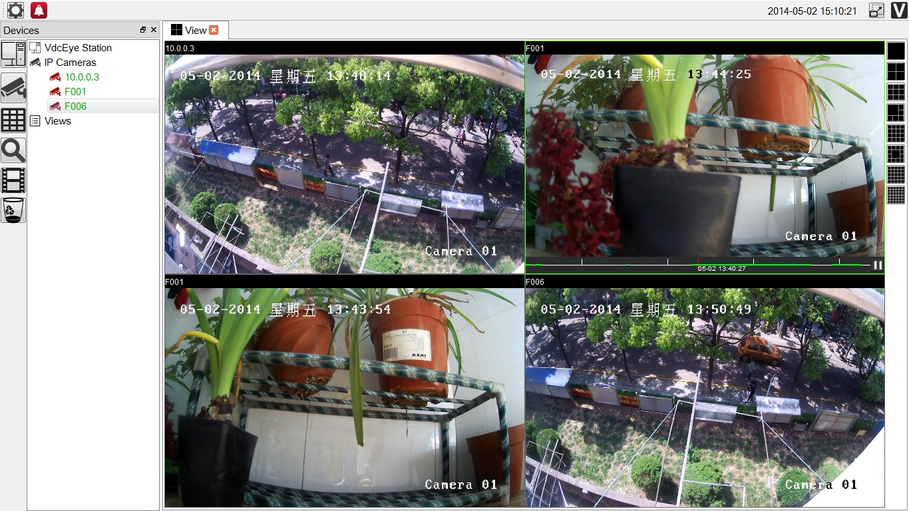

https://github.com/xsmart/vdc
open source ONVIF viewer
1. ONVIF ProfileS & ProfileG simulator
https://github.com/xsmart/ONVIFSim
ONVIF simulator IP Camera
Consulting Services
xsmart@163.com
2. ONVIF Web plugin(Activex & NPAPI)
3. vdcEye viewer & vdcEye manager
>> vdcEye Manager V2014-0503.msi
Download 2014.05.02https://github.com/xsmart/vdc
>> vdcEye viewer 1.1.3.msi
Download 2014.02.28open source ONVIF viewer